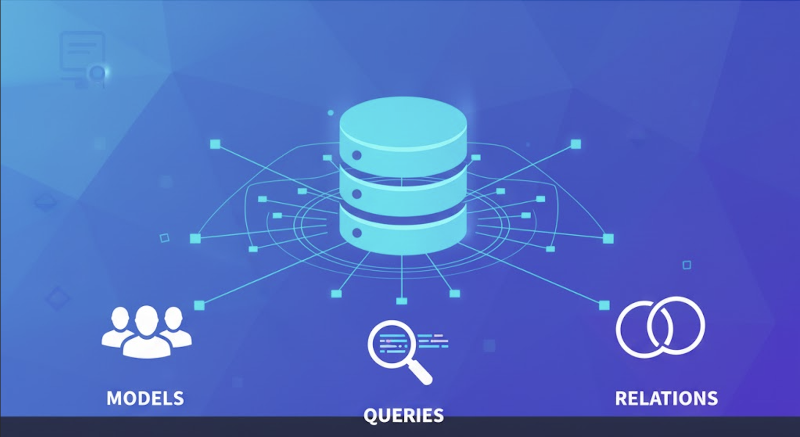

UD3 - Persistencia en Bases de Datos Relacionales con Kotlin

Guía de Uso
Estos apuntes están diseñados para un aprendizaje práctico. A lo largo de la unidad se aplicarán los conceptos teóricos para construir, paso a paso, una aplicación completa de gestión de datos. La temática de la aplicación es de libre elección, pero la estructura y los pasos a seguir serán comunes.
Intercaladas con la teoría y los ejemplos, se utilizarán las siguientes cajas de contenido:
- 🔍 Ejecutar y Analizar: Contienen fragmentos de código que deben ser ejecutados y comprendidos en detalle. El objetivo es observar su funcionamiento y salida.
- 🎯 Práctica para Aplicar: Indican la necesidad de programar y aplicar los conceptos aprendidos para avanzar en el desarrollo del proyecto personal.
- 📁 Entrega: Marcan los puntos de entrega del trabajo, que serán revisados y calificados por el profesor.
Sección 1: Fundamentos y Preparación del Entorno
En esta primera sección, sentaremos las bases teóricas sobre las bases de datos relacionales y prepararemos el entorno de trabajo inicial para nuestro proyecto.
Introducción a las Bases de Datos Relacionales
Las bases de datos relacionales constituyen un pilar fundamental en el desarrollo de software. Organizan la información en tablas, compuestas por filas (registros) y columnas (atributos). Cada tabla representa una entidad (p. ej., Clientes, Productos).
La integridad y las relaciones entre tablas se gestionan mediante claves:
- Clave Primaria (Primary Key, PK): Una o más columnas que identifican de forma única cada registro de una tabla.
- Clave Foránea (Foreign Key, FK): Una columna que referencia la clave primaria de otra tabla, estableciendo así una relación entre ambas.
La interacción con estas bases de datos se realiza a través del lenguaje SQL (Structured Query Language), que permite ejecutar las operaciones CRUD:
- Create (Crear):
INSERT. - Read (Leer):
SELECT. - Update (Actualizar):
UPDATE. - Delete (Borrar):
DELETE.
Tipos de Gestores de Bases de Datos (SGBD)
Para conectar una aplicación a una base de datos, es esencial conocer el tipo de SGBD, ya que cada uno requiere un conector (driver) específico.
-
Gestores Embebidos (SQLite, H2, Derby):
- Bases de datos ligeras almacenadas en un único fichero local. No requieren un servicio de servidor independiente.
- Ideales para aplicaciones de escritorio, móviles, prototipos o pruebas.
-
Gestores Cliente-Servidor (PostgreSQL, MySQL, Oracle):
- Sistemas robustos que se ejecutan como un servicio en un servidor, permitiendo múltiples conexiones concurrentes.
- Son el estándar en entornos empresariales y aplicaciones web por su escalabilidad y seguridad.
En este proyecto se comenzará utilizando SQLite por su simplicidad.
🎯 Práctica para Aplicar: Creación del Proyecto y la Base de Datos
- Crea un nuevo proyecto en Kotlin con Gradle.
- A partir del fichero de información utilizado en la unidad anterior, diseña una tabla para una base de datos SQLite.
- Utiliza una herramienta como DB Browser for SQLite para crear un fichero
nombre_de_tu_BD.sqliteque contenga dicha tabla. Define una clave primaria y los tipos de datos adecuados para cada columna. - Crea una carpeta
datosen la raíz de tu proyecto y copia en ella el archivo.sqlite.
Sección 2: Conexión a la Base de Datos con JDBC
Ahora que tenemos el entorno listo, el siguiente paso es establecer la comunicación entre nuestra aplicación Kotlin y la base de datos.
Mecanismos de Acceso: ORM vs. Conectores
Existen dos estrategias principales para interactuar con una base de datos:
- ORM (Object-Relational Mapping): Herramientas como Hibernate o Exposed que mapean tablas a clases de código, permitiendo trabajar con objetos en lugar de escribir SQL directamente.
- Conectores (Drivers): Librerías que actúan como puente entre la aplicación y el SGBD. Utilizaremos el estándar JDBC (Java Database Connectivity), que requiere escribir SQL manualmente pero proporciona un control total y una comprensión fundamental de la comunicación.
Para usar JDBC, es necesario añadir la dependencia del driver en build.gradle.kts:
dependencies {
// Para SQLite
implementation("org.xerial:sqlite-jdbc:3.43.0.0")
// Para PostgreSQL (se usará opcionalmente más adelante)
implementation("org.postgresql:postgresql:42.7.1")
}
El Gestor de Conexión
Una buena práctica es centralizar la lógica de conexión en un único objeto. Esto facilita el mantenimiento, ya que cualquier cambio en la configuración solo requiere modificar un fichero.
🔍 Ejecutar y Analizar: Conexión Básica
El siguiente código muestra una conexión directa a una base de datos SQLite. Ejecútalo para comprobar que se establece la comunicación.
import java.io.File
import java.sql.DriverManager
fun main() {
val dbPath = "datos/plantas.sqlite" // Asegúrate de que exista este fichero
val dbFile = File(dbPath)
println("Ruta absoluta de la BD: ${dbFile.absolutePath}")
val url = "jdbc:sqlite:${dbFile.absolutePath}"
try {
DriverManager.getConnection(url).use { conn ->
println("Conexión establecida correctamente con SQLite.")
}
} catch (e: Exception) {
println("Error al conectar: ${e.message}")
}
}
Para mejorar la organización, encapsularemos esta lógica en un objeto ConexionBD.
// Fichero: ConexionBD.kt
import java.io.File
import java.sql.Connection
import java.sql.DriverManager
import java.sql.SQLException
object ConexionBD {
private val dbPath = "datos/plantas.sqlite" // Modificar según tu fichero
private val dbFile = File(dbPath)
private val url = "jdbc:sqlite:${dbFile.absolutePath}"
fun getConnection(): Connection? {
return try {
DriverManager.getConnection(url)
} catch (e: SQLException) {
println("Error al conectar con la base de datos: ${e.message}")
null
}
}
}
🎯 Práctica para Aplicar: Implementar el Gestor de Conexión
- Crea un nuevo fichero
ConexionBD.kten tu proyecto. - Implementa el
objectanterior, modificandodbPathpara que apunte a tu fichero.sqlite. - En
Main.kt, utilizaConexionBD.getConnection()para verificar que la conexión se establece.
Sección 3: Arquitectura de Acceso a Datos (Patrón DAO)
Con la conexión resuelta, necesitamos una forma estructurada de realizar operaciones. Para ello, implementaremos el patrón de diseño DAO.
El Modelo de Datos (data class)
Una data class sirve como un DTO (Data Transfer Object) que representa la estructura de un registro de la tabla. Su única función es transportar datos.
// Fichero: Planta.kt
data class Planta(
val id: Int? = null, // Nulable, ya que es autogenerado por la BD
val nombreComun: String,
val nombreCientifico: String,
val frecuenciaRiego: Int,
val altura: Double
)
El Objeto de Acceso a Datos (DAO)
El DAO (Data Access Object) es un objeto que encapsula todo el acceso a la base de datos para una entidad. Abstrae la lógica de persistencia del resto de la aplicación.
Ventajas:
- Separación de responsabilidades: La lógica de negocio no se mezcla con el código SQL.
- Mantenibilidad: Cambios en la BD solo afectan al DAO correspondiente.
- Reutilización: Los métodos del DAO pueden ser invocados desde diferentes partes del programa.
🎯 Práctica para Aplicar: Definir el Modelo de Datos
- Crea un nuevo fichero Kotlin para tu modelo (ej:
Videojuego.kt). - Define una
data classcuyas propiedades se correspondan con las columnas de tu tabla.
Sección 4: Implementación de Operaciones CRUD
Esta sección detalla cómo construir el DAO para realizar las operaciones de lectura y escritura, siguiendo buenas prácticas de seguridad y gestión de recursos.
Buenas Prácticas: PreparedStatement y Gestión de Recursos
- Seguridad con
PreparedStatement: Se debe utilizar siemprePreparedStatementpara ejecutar consultas con datos variables. A diferencia deStatement, precompila la sentencia SQL y trata los parámetros como datos, no como código ejecutable, previniendo así ataques de Inyección SQL. - Gestión de Recursos con
.use: Es imprescindible cerrar los recursos JDBC (Connection,Statement,ResultSet). La función de extensión.usede Kotlin es la forma recomendada, ya que asegura el cierre automático del recurso.
🔍 Ejecutar y Analizar: Gestión de Recursos con y sin .use
Compara las dos siguientes funciones. Ambas hacen lo mismo, pero la versión con .use es más concisa y segura.
// 1. Cierre automático con .use (Recomendado)
fun listarConUse() {
ConexionBD.getConnection()?.use { conn ->
conn.prepareStatement("SELECT * FROM plantas").use { stmt ->
val rs = stmt.executeQuery()
while (rs.next()) {
println("- ${rs.getString("nombre_comun")}")
}
}
}
}
// 2. Cierre manual con try-catch-finally
fun listarConFinally() {
var conn: Connection? = null
var stmt: java.sql.PreparedStatement? = null
var rs: java.sql.ResultSet? = null
try {
conn = ConexionBD.getConnection()
stmt = conn?.prepareStatement("SELECT * FROM plantas")
rs = stmt?.executeQuery()
while (rs?.next() == true) {
println("- ${rs.getString("nombre_comun")}")
}
} catch (e: SQLException) {
e.printStackTrace()
} finally {
rs?.close()
stmt?.close()
conn?.close()
}
}
Implementación del DAO
🔍 Ejecutar y Analizar: Implementación del Objeto DAO
El siguiente código muestra una implementación completa de PlantasDAO. Analiza cómo cada función utiliza PreparedStatement, gestiona los recursos con .use y mapea los datos entre el ResultSet y la data class Planta.
// Fichero: PlantasDAO.kt
import java.sql.SQLException
object PlantasDAO {
fun listarPlantas(): List<Planta> {
val lista = mutableListOf<Planta>()
val sql = "SELECT * FROM plantas"
ConexionBD.getConnection()?.use { conn ->
conn.prepareStatement(sql).use { stmt ->
val rs = stmt.executeQuery()
while (rs.next()) {
lista.add(Planta(
id = rs.getInt("id"),
nombreComun = rs.getString("nombre_comun"),
nombreCientifico = rs.getString("nombre_cientifico"),
frecuenciaRiego = rs.getInt("frecuencia_riego"),
altura = rs.getDouble("altura")
))
}
}
}
return lista
}
fun consultarPlantaPorId(id: Int): Planta? {
var planta: Planta? = null
val sql = "SELECT * FROM plantas WHERE id = ?"
ConexionBD.getConnection()?.use { conn ->
conn.prepareStatement(sql).use { stmt ->
stmt.setInt(1, id)
val rs = stmt.executeQuery()
if (rs.next()) {
planta = Planta(
id = rs.getInt("id"),
nombreComun = rs.getString("nombre_comun"),
nombreCientifico = rs.getString("nombre_cientifico"),
frecuenciaRiego = rs.getInt("frecuencia_riego"),
altura = rs.getDouble("altura")
)
}
}
}
return planta
}
fun insertarPlanta(planta: Planta) {
val sql = "INSERT INTO plantas(nombre_comun, nombre_cientifico, frecuencia_riego, altura) VALUES (?, ?, ?, ?)"
ConexionBD.getConnection()?.use { conn ->
conn.prepareStatement(sql).use { stmt ->
stmt.setString(1, planta.nombreComun)
stmt.setString(2, planta.nombreCientifico)
stmt.setInt(3, planta.frecuenciaRiego)
stmt.setDouble(4, planta.altura)
if (stmt.executeUpdate() > 0) {
println("${planta.nombreComun} insertada con éxito.")
}
}
}
}
fun actualizarPlanta(planta: Planta) {
if (planta.id == null) {
println("Error: No se puede actualizar una planta sin ID.")
return
}
val sql = "UPDATE plantas SET nombre_comun = ?, nombre_cientifico = ?, frecuencia_riego = ?, altura = ? WHERE id = ?"
ConexionBD.getConnection()?.use { conn ->
conn.prepareStatement(sql).use { stmt ->
stmt.setString(1, planta.nombreComun)
stmt.setString(2, planta.nombreCientifico)
stmt.setInt(3, planta.frecuenciaRiego)
stmt.setDouble(4, planta.altura)
stmt.setInt(5, planta.id)
if (stmt.executeUpdate() > 0) {
println("Planta con ID ${planta.id} actualizada.")
} else {
println("No se encontró ninguna planta con ID ${planta.id} para actualizar.")
}
}
}
}
fun eliminarPlanta(id: Int) {
val sql = "DELETE FROM plantas WHERE id = ?"
ConexionBD.getConnection()?.use { conn ->
conn.prepareStatement(sql).use { stmt ->
stmt.setInt(1, id)
if (stmt.executeUpdate() > 0) {
println("Planta con ID $id eliminada.")
} else {
println("No se encontró ninguna planta con ID $id para eliminar.")
}
}
}
}
}
🎯 Práctica para Aplicar: Construir el DAO
- Crea un fichero para tu DAO (ej:
VideojuegoDAO.kt). - Implementa las cuatro funciones CRUD (
listar,insertar,actualizar,eliminar) y una de consulta por ID (consultarPorId). - Adapta el código SQL y los parámetros a tu tabla y tu
data class.
La Aplicación Principal (Main.kt)
El fichero Main.kt orquesta las llamadas al DAO para ejecutar la lógica de la aplicación.
🎯 Práctica para Aplicar: Orquestar la Aplicación desde Main
- En tu fichero
Main.kt, utiliza los métodos de tu DAO para probar todas las operaciones. - Inserta datos, consulta uno por su ID, actualízalo y borra otro.
- Muestra por consola los resultados para verificar el correcto funcionamiento.
📁 Entrega: Aplicación CRUD Funcional
En este punto, el proyecto debe ser funcional y contener:
- Una base de datos SQLite con al menos una tabla.
- Los ficheros
ConexionBD.kt, el fichero de tu modelo, el de tu DAO yMain.kt. - La aplicación debe ser capaz de realizar las operaciones CRUD sobre la tabla.
Sección 5: Conceptos Avanzados
Finalmente, exploraremos dos conceptos que elevan la robustez y profesionalidad de la aplicación.
Gestión de Transacciones
Una transacción agrupa operaciones en una única unidad de trabajo atómica (todo o nada). Si todas las operaciones tienen éxito, se confirman (commit); si alguna falla, se revierten todas (rollback), garantizando la integridad de los datos.
🔍 Ejecutar y Analizar: Implementación de una Transacción
Este método de ejemplo actualiza dos registros de forma segura dentro de una transacción.
import java.sql.Connection
fun actualizarAlturasConTransaccion(id1: Int, nuevaAltura1: Double, id2: Int, nuevaAltura2: Double) {
var conn: Connection? = null
try {
conn = ConexionBD.getConnection()
conn?.autoCommit = false // 1. Iniciar transacción
conn?.prepareStatement("UPDATE plantas SET altura = ? WHERE id = ?")?.use { stmt ->
stmt.setDouble(1, nuevaAltura1); stmt.setInt(2, id1); stmt.executeUpdate()
}
conn?.prepareStatement("UPDATE plantas SET altura = ? WHERE id = ?")?.use { stmt ->
stmt.setDouble(1, nuevaAltura2); stmt.setInt(2, id2); stmt.executeUpdate()
}
conn?.commit() // 2. Confirmar cambios
println("Transacción completada.")
} catch (e: SQLException) {
println("Error en la transacción, se revierten los cambios: ${e.message}")
conn?.rollback() // 3. Revertir cambios
} finally {
conn?.autoCommit = true
conn?.close()
}
}
Evolución a SGBD Cliente-Servidor: PostgreSQL
Gracias a la buena arquitectura, migrar de SQLite a PostgreSQL es sencillo. Solo requiere modificar el gestor de conexión.
🎯 Práctica para Aplicar (Opcional): Migración a PostgreSQL
- Instala PostgreSQL, preferiblemente mediante un contenedor Docker.
- Crea la base de datos y la tabla en PostgreSQL con la misma estructura.
- Modifica
ConexionBD.ktcon los nuevos parámetros de conexión (URL, usuario, contraseña). - Ejecuta la aplicación. Debería funcionar sin alterar el DAO o la lógica principal.